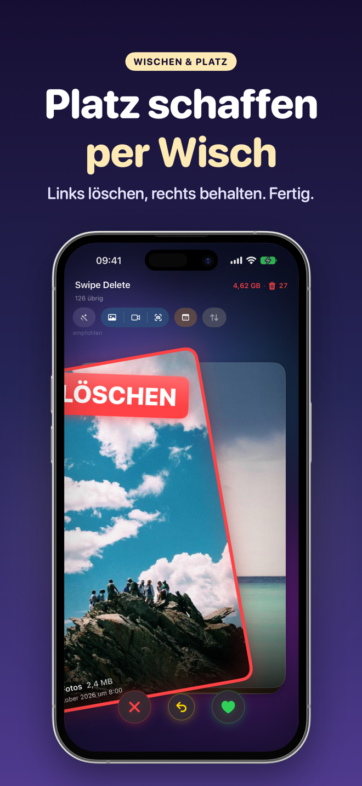
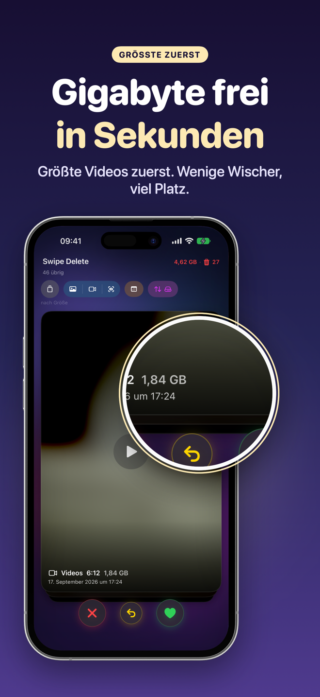
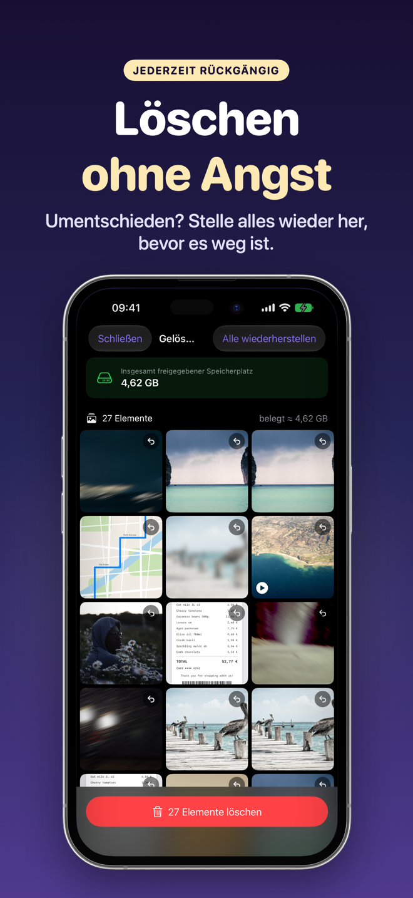
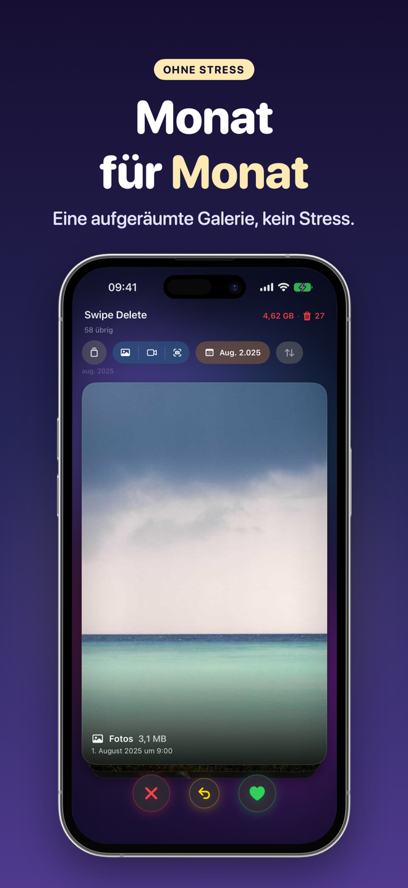
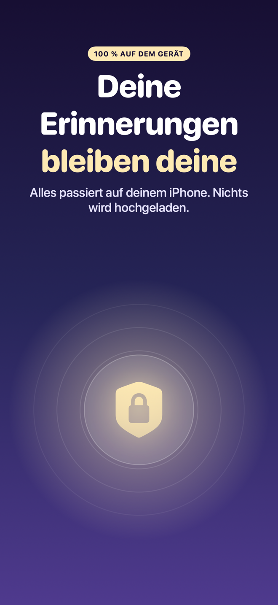
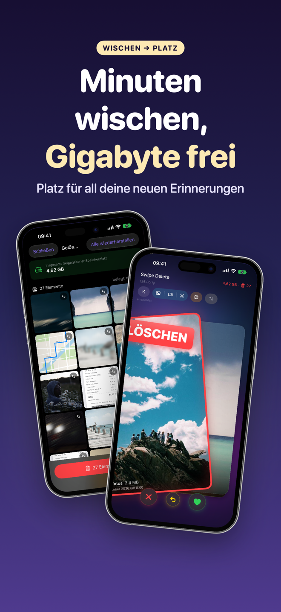

SwipeDelete · Fotos löschen
Fotos löschen mit einem Wisch – und iPhone-Speicher freigeben
Mach Platz – wie in einem Spiel. Nach links wischen = löschen, nach rechts wischen = behalten. In wenigen Minuten gewinnst du spürbar Speicherplatz zurück, ohne Album für Album durchzuscrollen.
Demnächst imApp StoreAlles auf dem Gerät · Papierkorb als Sicherheitsnetz · Einmalkauf, kein Abo

Wischen. Entscheiden. Platz haben.
Entspannt ausmisten – ohne Stress und ohne Angst, etwas Wichtiges zu verlieren.
Demnächst imApp Store- Smarte VorschlägeScreenshots, ähnliche Fotos, unscharfe Aufnahmen und Serienbilder ganz oben.
- Große Videos zuerstNach Größe sortieren und mit wenigen Wischgesten viel freigeben.
- Doppelt abgesichertApp-Papierkorb, „Rückgängig“ und Bestätigung durch iOS.
- Privatsphäre zuerstDeine Fotos verlassen nie dein Gerät.
Aufräumen, das sich gut anfühlt
Mit leichtem haptischem Feedback bei jeder Entscheidung. Wische für alle Bildschirme →
Links löschen, rechts behalten 
Große Videos zuerst 
Jederzeit wiederherstellen 
Monat für Monat 
100 % auf dem Gerät 
Minuten wischen, Gigabyte frei Einmal zahlen, kein Abo
So einfach geht's
Vier Schritte, keine Einarbeitung.
Zugriff auf Fotos erlauben
Öffne SwipeDelete und erlaube den Zugriff auf deine Mediathek. Die Analyse bleibt auf deinem iPhone.
Startpunkt wählen
Smarte Vorschläge, Filter für Fotos, Videos oder Screenshots, Jahr und Monat – oder Sortierung nach Größe.
Wischen
Links löschen, rechts behalten. Falsch gewischt? Ein Tap auf „Rückgängig“.
Prüfen und bestätigen
Sieh dir den Papierkorb an, stelle wieder her, was du behalten willst, und bestätige.
Ratgeber zum Speicher freigeben
Praktische Anleitungen, derzeit auf Englisch.
iPhone-Speicher freigeben
Anleitung auf Englisch.
Lesen (EN) →Doppelte Fotos löschen
Anleitung auf Englisch.
Lesen (EN) →Screenshots löschen
Anleitung auf Englisch.
Lesen (EN) →Unscharfe Fotos löschen
Anleitung auf Englisch.
Lesen (EN) →Große Videos finden
Anleitung auf Englisch.
Lesen (EN) →Mediathek ausmisten
Anleitung auf Englisch.
Lesen (EN) →Viele Fotos auf einmal löschen
Anleitung auf Englisch.
Lesen (EN) →Serienbilder löschen
Anleitung auf Englisch.
Lesen (EN) →Häufige Fragen
Wie lösche ich viele Fotos schnell auf dem iPhone?
Mit SwipeDelete wischst du durch Fotos und Videos: nach links = löschen, nach rechts = behalten. Jede Entscheidung dauert eine Sekunde, und mit „Rückgängig“ machst du die letzte sofort ungeschehen. Mehr erfahren (EN)
Kann ich versehentlich gelöschte Fotos wiederherstellen?
Ja. Alles, was du nach links wischst, landet zuerst im App-eigenen Papierkorb. Dort kannst du einzelne Fotos wiederherstellen oder alles mit einem Tap leeren. Vor dem endgültigen Löschen fragt zusätzlich iOS nach. Mehr erfahren (EN)
Findet SwipeDelete Screenshots und doppelte Fotos?
Ja. Die App erkennt auf deinem Gerät Screenshots, ähnliche Fotos, unscharfe Aufnahmen und nicht aussortierte Serienbilder und legt sie ganz oben auf den Stapel. Mehr erfahren (EN)
Wie lösche ich große Videos zuerst?
Sortiere nach Größe: Die schwersten Dateien kommen zuerst, so holst du mit möglichst wenigen Wischgesten das meiste heraus. Mehr erfahren (EN)
Werden meine Fotos in die Cloud hochgeladen?
Nein. Die gesamte Analyse läuft ausschließlich auf deinem iPhone. Deine Fotos verlassen nie dein Gerät. Datenschutzerklärung (EN)
Ist SwipeDelete ein Abo?
Nein. Du kannst bis zu 300 MB kostenlos freigeben; die unbegrenzte Nutzung schaltest du einmalig frei – auf allen deinen Apple-Geräten. Nutzungsbedingungen (EN)
Mach aus deinem vollen iPhone wieder eine aufgeräumte Mediathek
SwipeDelete kommt bald in den App Store.
Demnächst imApp Store